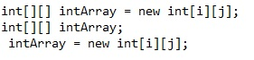
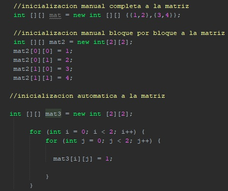
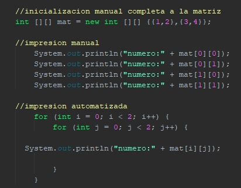
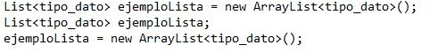
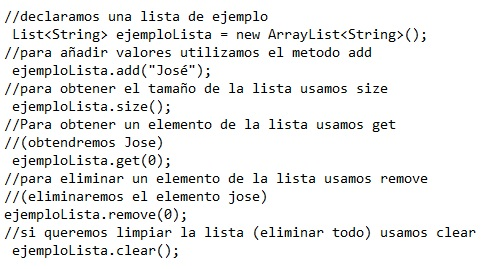
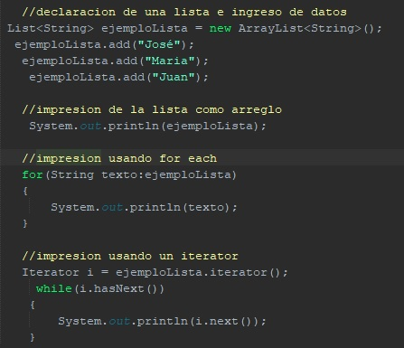

CURSO JAVA

Arreglos (Unidimensionales, bidimensionales, listas)
Comenzamos con un nuevo nivel en la enseñanza del lenguaje Java, en este nivel tocaremos temas bastante importantes al nivel de almacenamiento de datos y la llamada POO. Pero primero avancemos de poco en poco, hasta el momento hemos visto temas en los cuales si se ingresan datos desde el teclado, no hay una necesidad real de que esos datos se guarden en algun lado para usos posteriores. ahora añadiendo una nueva complejidad veremos los arreglos
Un array (arreglo) en Java es una estructura de datos que nos permite almacenar un conjunto de datos de un mismo tipo.
Los tipos de array que tenemos son:
⚫Arrays Dinamicos (Listas)
De manera general, el tamaño de los arrays se declara en un primer momento y no puede cambiar luego durante la ejecución del programa, a excepcion de las listas, las cuales no tienen un tamaño especifico sino que a medida que se necesitan espacios se utilizan
Arrays Unidimensionales (Vectores)
Un vector o array Unidimensionales es un conjunto de datos del mismo tipo agrupados y ordenados en un mismo nivel o fila, este arreglo se podria considerar como una fila con n cantidad de columnas para almacenar datos, las maneras de declarar un arreglo son las siguientes:
El proceso para declarar un vector es muy semejante al de las variables, con la diferencia que los vectores tienen despues del tipo de dato unos corchetes ([]), esto estos corchetes son las referecias a un vector, despues vemos que la declaracion se iguala a un tipo de dato con la dimension de la variable, esto puede ser complejo de interpretar, pero como los arreglos en general no son tipos basicos de datos, en java deben apuntar a un objeto array de tipo entero.
A continuación se muestran todos los tipos de datos normales declarados en un vector:
Para entender como almacenar datos en un vector, es necesario saber como funciona su almacenamiento. En los ejemplos de declaracion tenemos distintos largos en los arreglos, por ejemplo el primer arreglo de tipo byte tiene un tamaño de 4, es decir, que el arreglo almacena 4 posiciones para datos de tipo byte. Estas posiciones se enumeran del 0 al 3 ya que Todos los arreglos comienzan en 0.
Almacenamiento de datos
Para almacenar datos en un vector hay 3 metodos, podemos inicializar el vector con todos sus datos de una sola vez o de 1 en 1, en base a su tamaño o podemos rellenarlo con datos en un momento dado usando un ciclo for.
Como vemos en la imagen anterior, en el primer metodo los valores a almacenar en el arreglo se asignan en las llaves separadas por comas, aqui no se asigna el tamaño del vector, ya que el numero de valores en las llaves indica el numero maximo del vector. En el segundo metodo declaramos el vector de manera normal y procedemos a rellenar de uno en uno cada bloque del vector, empezando por el bloque 0. Por ultimo, en el metodo con for, utilizamos la variable iteradora "i" para tomar la referencia de los bloques del vector, la caracteristica principal es que el iterador debe empezar desde 0 hasta n-1 (siendo n el numero del vector) ya que los vectores empiezan en 0
Impresion de datos
Para imprimir los datos de un vector tenemos que considerar que la unica manera es imprimiendo 1 por 1 los elementos, sabiendo esto tenemos 2 opciones: imprimir de manera manual 1 por 1 cada elemento del array o automatizando el proceso usando un bucle
Como podemos observar la comparativa entre los 2 metodos, el bucle utilizado (Ciclo for) reduce considerablemente el codigo a digitar consiguiendo el mismo resultado. Una caracteristica importante es el uso de la funcion length para los arreglos, dicha funcion devuelve el valor del largo del vector, en este caso el largo seria 9 por tanto el ciclo recorrera desde el 0 al 8 (i menor a 9, sin considerar el ultimo). A manera de evaluación se invita a digitar el codigo presentado y hacer la comparativa de la impresion
Arrays bidimensionales (matrices)
Estos tipos de arreglos son parecidos a los Unidimensionales en su definicion, ya que son grupos de datos del mismo tipo almacenados en orden, con la diferencia que los arreglos bidimensionales tienen 2 rangos: filas y columnas, a diferencia de los vectores que se asume que es una fila con n columnas. La declaracion de una matriz es semejante a la de un vector, con la diferencia que despues del tipo de dato deben agregarse 2 pares de corchetes ([][]).

Como vemos, hemos asignado el valor de i y j para los tamaños de la matriz esta asociacion se da ya que de debemos declarar el valor de las filas (i) y el valor de las columnas (j) a la hora de declarar una matriz, esta caracteristica de tener filas y columnas le da el nombre de matriz asociandola a las estructuras que se ve en matematicas.
Almacenamiento de datos en una matriz
Para almacenar datos en una matriz debemos hacer de la misma manera que en un vector, con la diferencia que debemos tomar en cuenta ahora la posicion del bloque respecto a sus filas y sus columnas, sabiendo esto, las maneras en las que podemos introducir datos a una matriz son las siguientes:

en el ingreso de datos de manera manual y completa, podemos ver que las filas se separan con pares de llaves que dentro tienen los valores separados por comas. esto refleja la estructura de filas y columnas descritas anteriormente. Y tomando como punto importante el metodo automatizado para ingresar datos usamos 2 ciclos for, ya que uno es para las filas (i) y otro es para las columnas (j), esto se hace para recorrer la biprofundidad del vector
Impresion de datos de una matriz
Asi como vimos que el ingreso de datos es bastante similar, la impresion de datos es muy semejante a la de un vector, solo hay que saber las posiciones de los bloques para poder imprimir correctamente los valores

Como vemos, es importante conocer como funcionan las filas y las columnas de datos en una matriz, para poder hacer buen uso de la impresion. Siempre que querramos hacer uso de una matriz debemos usar los 2 ciclos for, es la forma mas simple y completa de hacerlo
Arrays Dinamicos (Listas)
Hasta el momento hemos visto arreglos estaticos, es decir, arreglos con un tamaño definido desde el comienzo, sin posibilidad de poder cambiarla en otro momento de la ejecucion. Pero que sucede si queremos un arreglo con tamaño variable, ya sea para mover diferentes cantidades de datos en una misma estructura o para no desperdiciar espacio en bloques sin usar. La opcion mas potente son las listas
Las listas son estructuras variables muy parecidas a las matrices o vectores pero con la mejora de que permiten almacenar grandes volumenes de datos, ya que no es necesario que especifiquemos el valor del tamaño de la estructura, eso se asigna de manera dinamica a medida se utiliza la lista. Esta es una ventaja grande en el mundo laboral donde las estructuras dinamicas reinan en el almacenamiento de datos. La manera de definir una lista es la siguiente:

Como podemos ver, la manera de declarar una lista es un poco diferente, ya que no usamos corchetes ni una asignacion de tamaño a la estructura. Esta declaracion se asemeja al de una variable a la que le asignas una funcion. pero no hay que confundirnos, se esta declarando un array si se llaman a las clases "List" y "ArrayList"
Funciones para el uso de listas
Las listas al ser una estructura mas compleja de almacenamiento de datos, no tiene las maneras convencionales de manejo como las de un arreglo estatico. El manejo de los datos de una lista se hace por medio de funciones o palabras reservadas, algunas de las funciones mas comunes he importantes son:

Algunas consideraciones que debemos tomar son: el metodo add puede asignar a un espacio en especifico el valor que se mande como argumento, pero con algunas restricciones. El metodo remove puede borrar ademas de mandando como argumento el indice, mandando el elemento (por ejemplo el nombre) de una lista. De manera general estas funciones son las mas comunes y que sirven a la hora de querer aprender el funcionamiento de las listas
Funciones para el uso de listas
La manera de imprimir una lista varia respecto a las estructuras estaticas, ya que se puede hacer con funciones o usando iteradores, Las listas es una de las opciones mas viables para usar un ciclo for each mencionado de manera rapida en clases anteriores, este ciclo puede recorrer una lista sin problemas ya que no necesita el tamaño del mismo. Algunas de las formas para imprimir una lista son las siguientes:

Estas 3 maneras de imprimir un arreglo son muy diferentes entre si pero es importante saber como funciona cada una y en que caso aplicarlas. La impresion directa tomando como argumento la lista nos imprime todos los elementos de dicha estructura en forma de un arreglo Unidimensional. despues usando el for each podemos ver que no necesitamos especificar el tamaño de la lista ya que el ciclo for each recorrera cada elemento del arreglo hasta el ultimo en orden numerico. Y por ultimo tenemos la impresion usando un iterator, esta manera de imprimir es la mas comunmente usada para imprimir una lista, ya que da una seguridad extra antifallos en caso de que la lista este vacia. primero debemos declara una "variable" iterator y usar el metodo iterator de la lista que usaremos, despues usaremos un ciclo while donde pongamos la condicion hasNext, esta condicion nos devuelve un valor booleano en caso de que haya un valor siguiente en la lista, si esto se cumple se imprime dicho elemento usando la funcion next que nos devuelve el elemento siguiente en la lista. Se recomienda digitar este codigo y comprobar las maneras de impresion de una lista.
Contenido multimedia